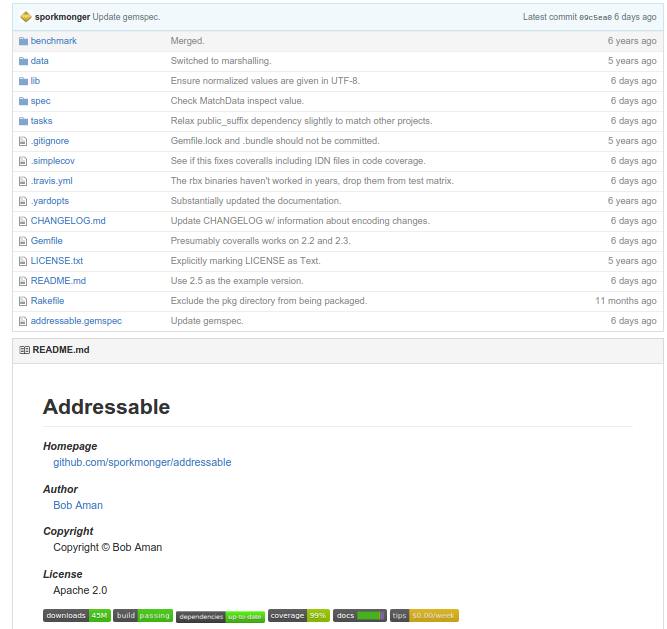

Гемы, что они такое, как их выбирать и создавать
Kottans-Ruby, осень 2016
Лекция Четвёртая (не считая мастер-класса)
Виктор Шепелев (zverok)
Что такое гем
- Полезный код
- …инкапсулирующий что-то важное
- сложные данные;
- сервисы и хранилища;
- специфические концепции и операции;
- …оттестированный, документированный и проверенный в бою;
- …выложенный на rubygems.orgне обязательно.
Как выглядит хороший гем

Эй, а почему это важно?
- Любой код хочет стать гемом (А вы хотите стать профессионалами)
- Понимать, чем хороший гем отличается от плохого - важно.
Гем - это не просто кусок кода
Это ещё:
- тесты;
- документация;
- примеры;
- обобщения и конфигурабельность;
- чёткое разделение ответственности.
Кстати, обычному коду это всё тоже не помешает!
Вот почему эта лекция важна
Ответственность: библиотеки vs фреймворки vs утилиты
- Библиотека: подключаем и используем (например, addressable);
- Фреймворк: подключаем и выстравиваем код определённым образом (например, rails);
- Утилита: запускаем в командной строке (например, rubocop).
Ответственность: независимые гемы vs плагины
- Пример независимого гема: addressable;
- Пример плагина: rspec-rails.
Чтобы просто код превратился в гем…
…нужно добавить - что?
- сначала нужно убрать:
- все лишние ожидания касательно среды, окружающих библиотек, версий и проч.;
- любые следы кода, который делает вещи, не относящиеся к гему;
- сделать конфигурации и обобщения;
- или явный выбор в пользу convention over configuration (и гореть в аду);
- примеры;
- доки.
Доки
- README;
- YARD/RDoc;
- GitHub Wiki и другие туториалы.
Инструменты контроля качества
- тестыно их недостаточно
- качество кода:
rubocop (reek, flog и другие);
- качество кода: CodeClimate;
- автоматизированная проверка: continuous integration - TravisCI;
- ….
Инструменты контроля качества: беджики
Последний шаг: публикация гема
gem build && gem push;- rubyflow.com (кстати, его надо читать);
- reddit.com/r/ruby (кстати, его надо читать).
Домашняя работа
README-driven development:
- берём тестов несуществующего зверя, написанные в прошлом уроке;
- пишем заготовку хорошего ридми гема, который содержит этого зверя и позволяет его использовать;
- ориентируемся на популярные современные библиотеки.
Итого
- Гем - это профессиональная стадия жизни кода;
- Пишите свой код так, как будто он станет популярным гемом, однажды;
- Все инструменты и подходы разработчика гемов обычному разработчику тоже пригодятся!
Hey, it is me!
Спасибо. С вами был Виктор Шепелев, обычно в интернетах известный как zverok.
- Мой гитхаб: https://github.com/zverok (и организация https://github.com/molybdenum-99 для
самых интересных штук);
- Личный сайт (как разработчика): https://zverok.github.io;
- Мой профайл (платного) Ruby-ментора: https://mkdev.me/mentors/zverok.
Now, let’s talk
Хорошие вопросы:
- карьера и самообразование;
- опыт и истории из жизни;
- в чём проблемы Рельсов;
- куда движется Руби;
- опенсорс, как и зачем.
Плохие вопросы:
- доктор, а почему когда я делаю так, в коленке хрустит? (конкретные вопросы применения специфических библиотек);
- политика, секс, диетология, йога.